Hanami Polaroid puts a camera that exists only in simulation into your hands and lets you operate it under realistic optical and ergonomic conditions. This is the whole loop as it runs in the headset, and, read as a product-testing method, each step shows a dimension you can actually evaluate in VR: how the device handles, whether its output looks right at every setting, and whether the experience stays comfortable.
Captured live in the running build via the XR Device Simulator (label visible bottom-left).
The camera is grabbed by reaching for it with your hand, not by pointing a far laser. Holding it, turning it, and bringing it up to frame are the same gestures you would make with a real device, which is exactly what you want to test when the question is how a product feels to hold and operate.
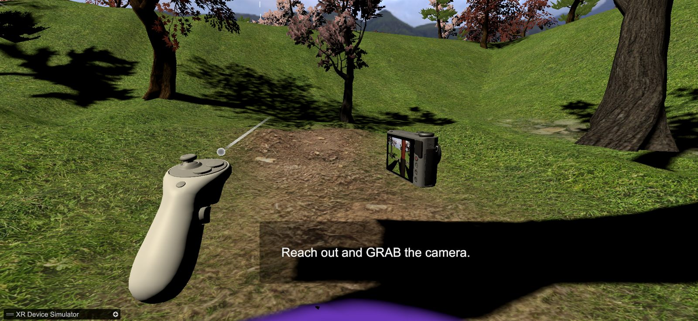
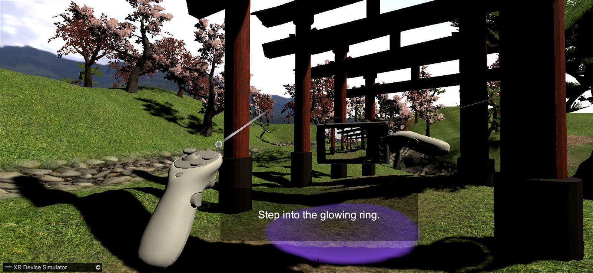
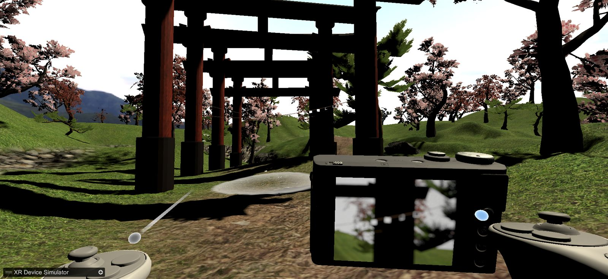
Soft, pulsing rings on the ground show valid spots to work from. Step into one and a tripod is placed for you, so framing happens from a stable, repeatable position. In a testing context this is what keeps different runs comparable: the same viewpoint every time.
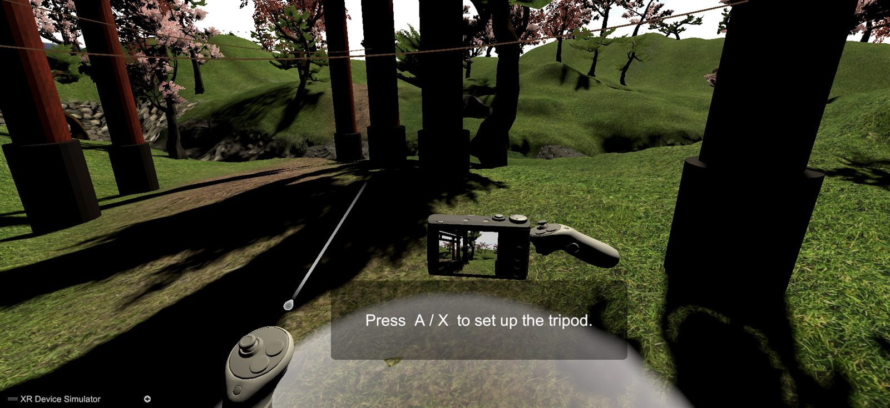
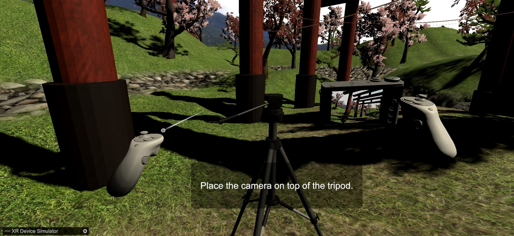
Mount the camera and look through it: the view snaps into a rear-LCD viewfinder with a live readout of focal length, aperture and focus distance. Behind the scenes a second, monocular camera renders this frame into a texture. The effects you see next are applied only to that texture, never to your own eyes.
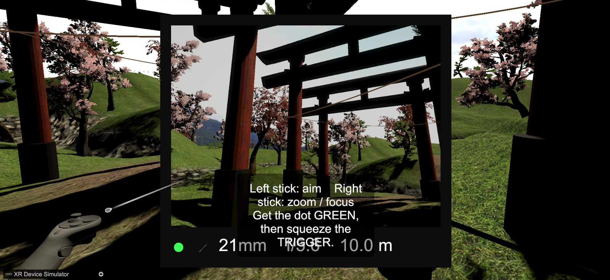
This is the product under test. Zoom, focus, aperture and depth-of-field blur all come from a single lens model: the focal length implied by the live field of view drives the blur directly, so the optics behave the way a real lens would at each setting. The focus dot reads red when the subject is outside the sharp band and green when it is in focus, letting a tester judge whether output looks right without leaving VR.
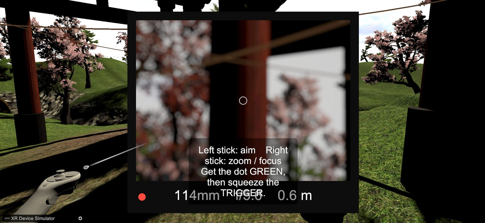
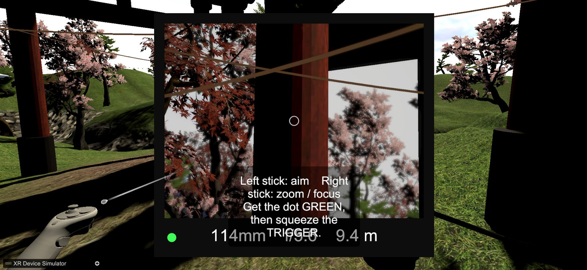
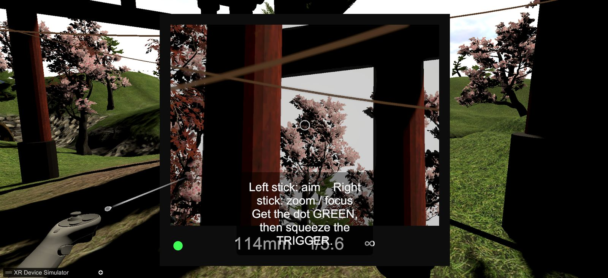
The shutter captures exactly what you framed, at the focal length, aperture and focus you set. What the viewfinder promised is what the print delivers.
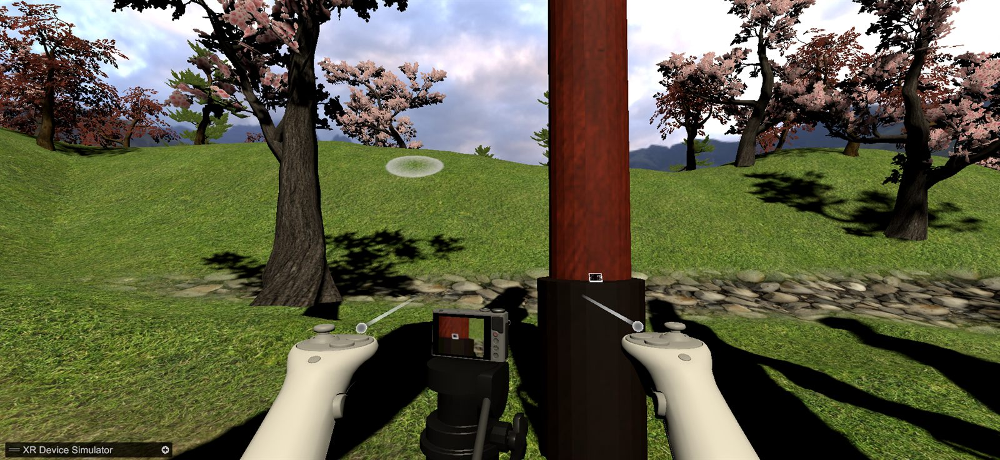
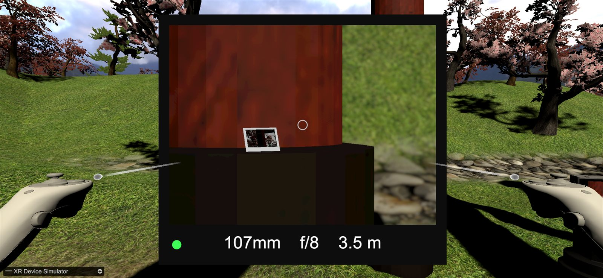
The photo ejects blank and develops over time, or faster if you shake it. The output is a tangible object you can pick up, hold to the light, and inspect, which turns "did that setting work?" into something you can literally look at.
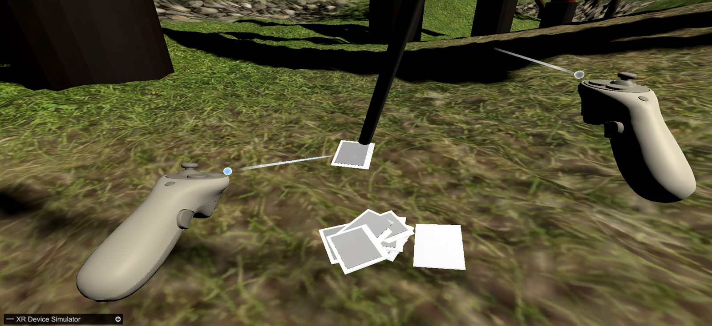
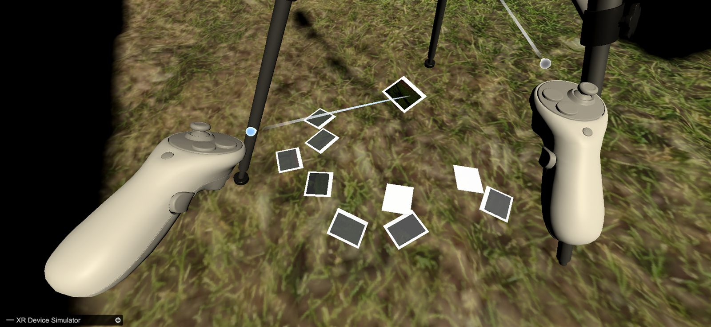
Finished prints clip onto ropes strung between the torii gates. The loop closes from operating the product to reviewing its output, side by side, which is the shape of a real comparison test: shoot a set of variants under identical conditions, then line them up.
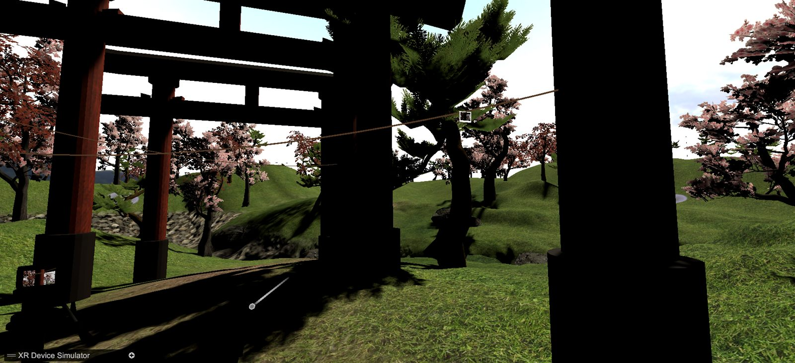
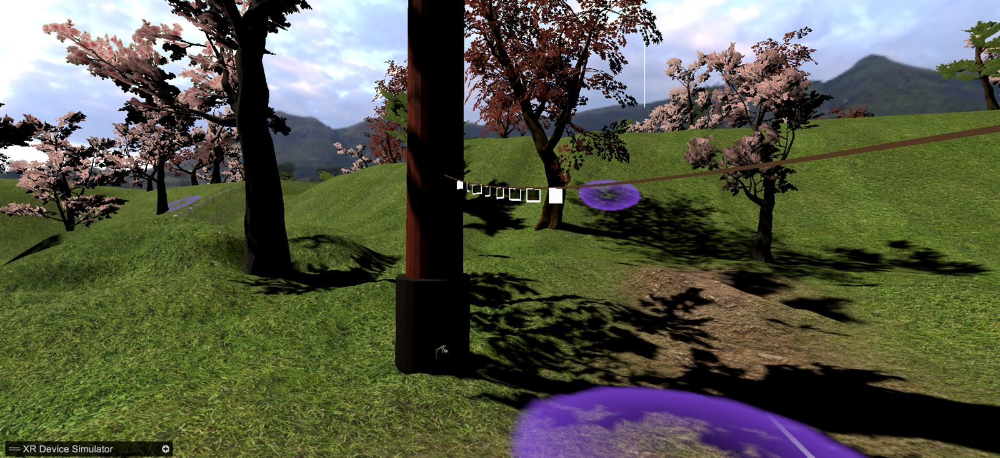